The Nintendo DS was released to the world on November 21st, 2004. It was not a massive success immediately though. Its true success would be with the Nintendo DS Lite a year later. The dual screen handheld was the first of its kind.

The Nintendo DS was released to the world on November 21st, 2004. It was not a massive success immediately though. Its true success would be with the Nintendo DS Lite a year later. The dual screen handheld was the first of its kind.
 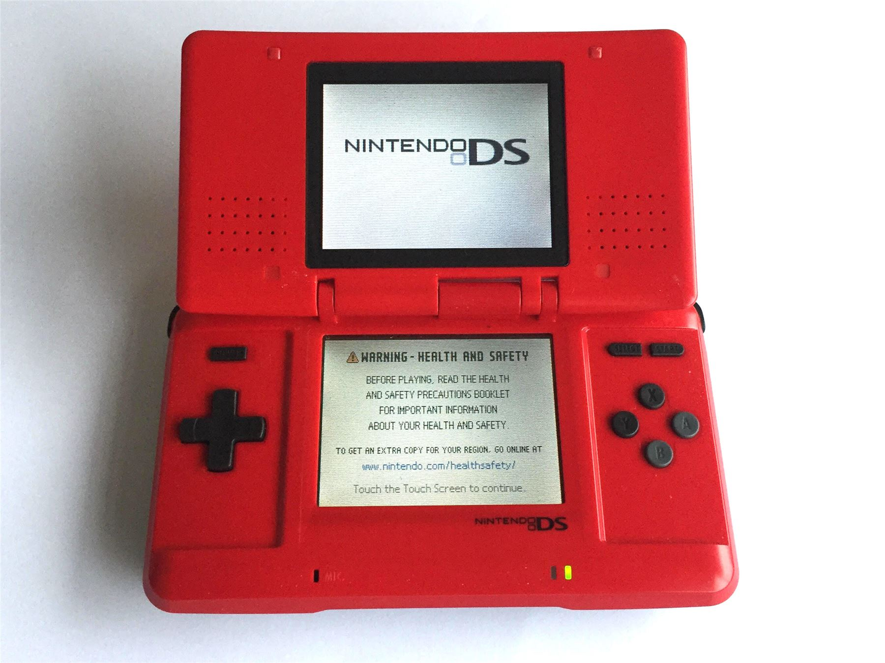
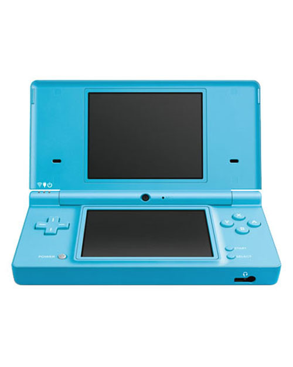
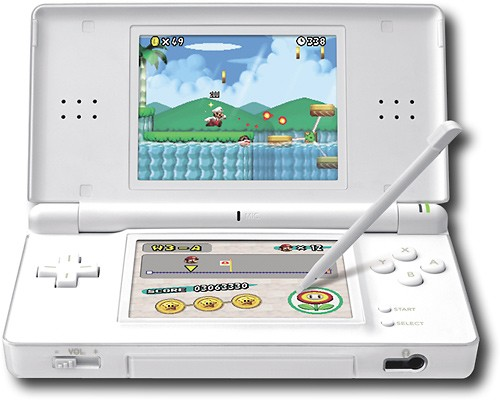
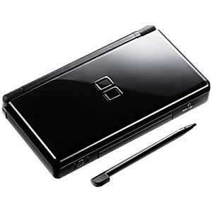
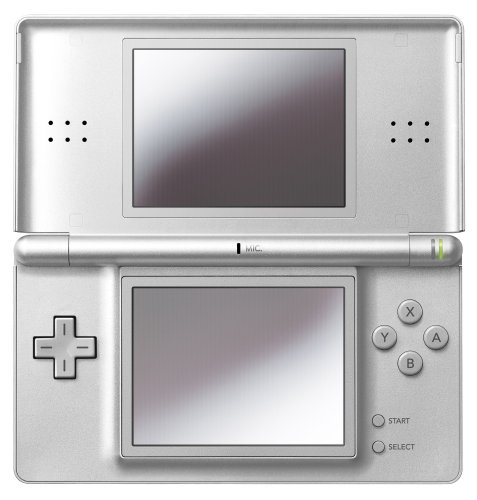
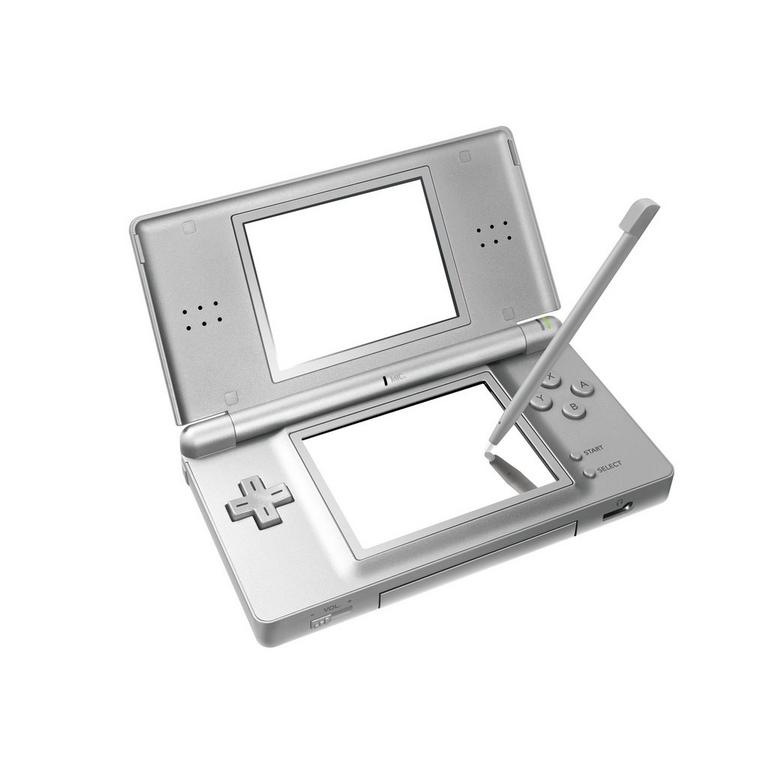
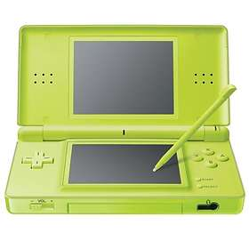
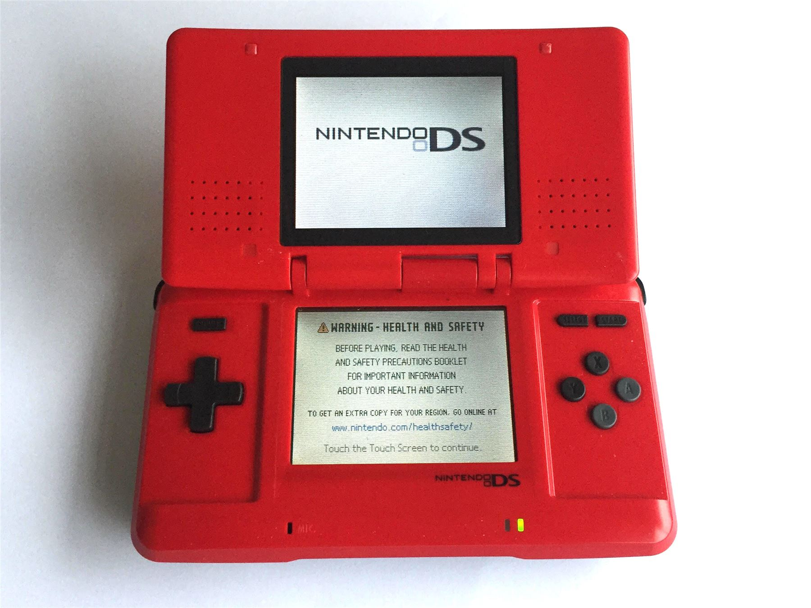
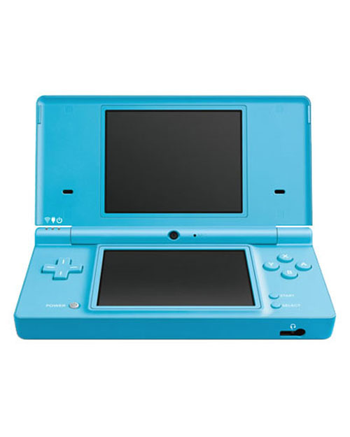
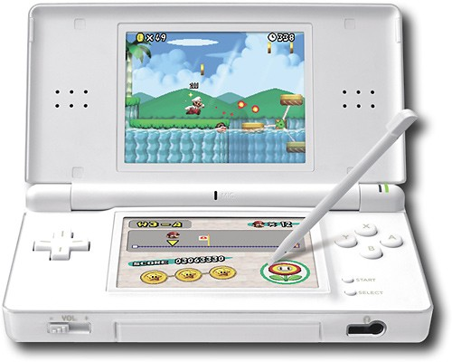
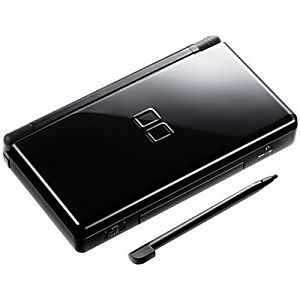
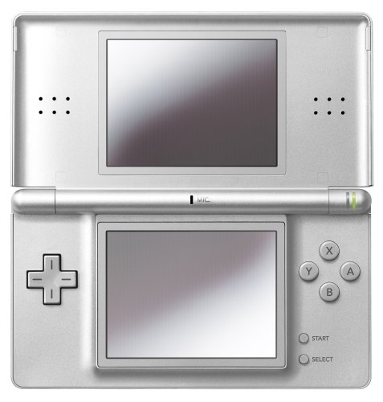
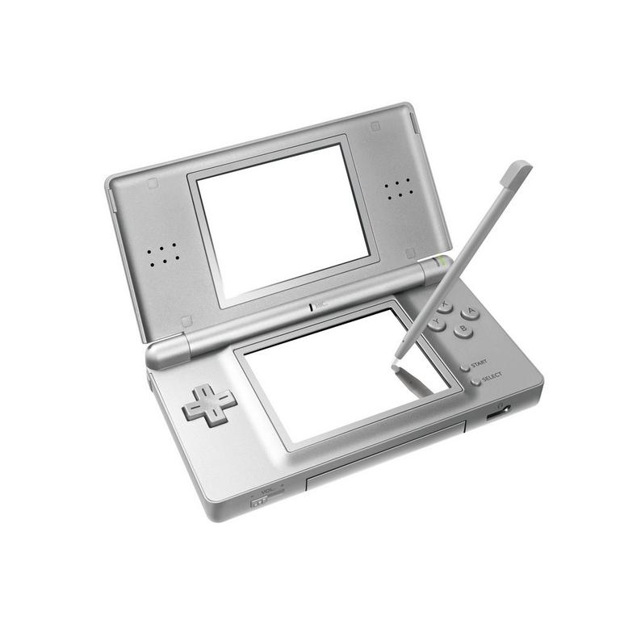
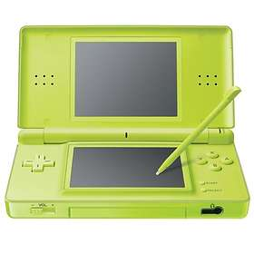
The DS line of systems ran from 2004 to 2011. It included the original Nintendo DS, the DS Lite, the DSi, and the DSi XL. Over time it would become one of the best selling consoles of all time, and still is to this day. Eventually, in 2011, the system was phased out with the release of the Nintendo 3DS. Just like the DS, it was also fairly unsuccessful at launch. But eventually it gained traction as bigger games started coming out for the system such as Pokemon X & Y.
The system boasted a fantastic library of games. From Mario Kart DS, to Pokemon Black & White, to more niche titles like The World Ends With You and Electroplankton. Some games, like Mario Kart, allowed for online play for up to 8 players at once, which was a pretty big deal at the time. The system even launched with a full remake of Super Mario 64 just to prove what the console was capable of. Of course, Tetris for the DS did crazy numbers as well.